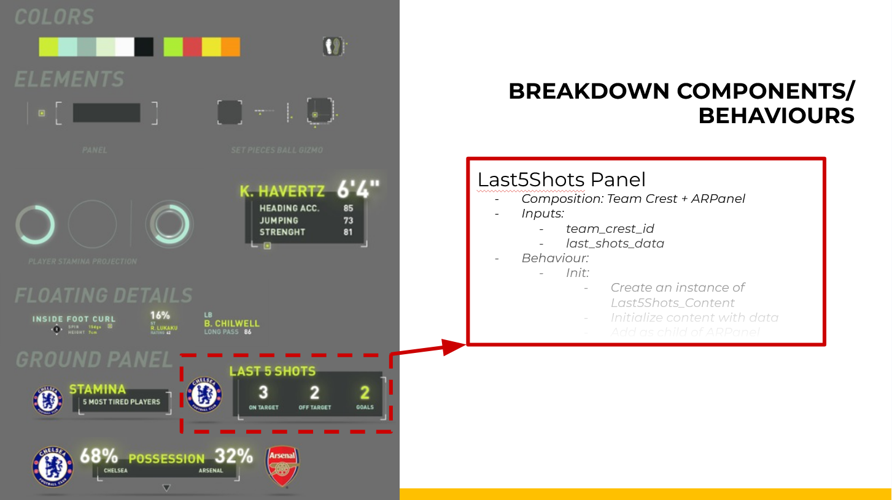
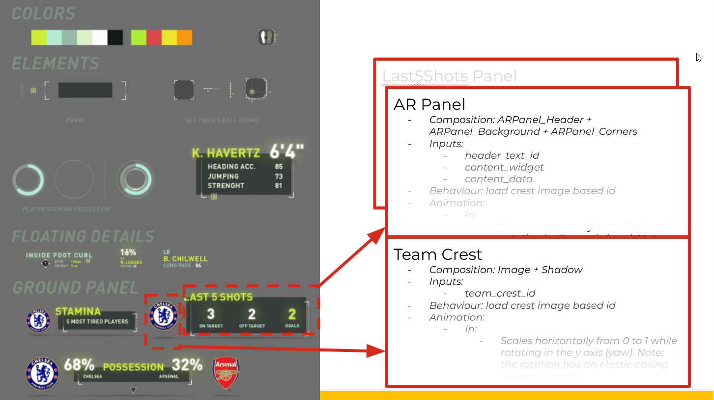
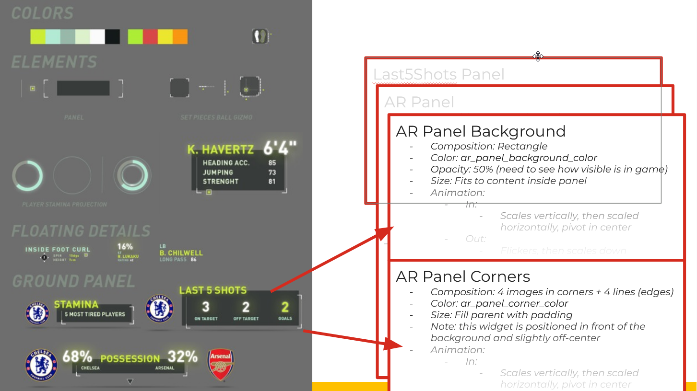
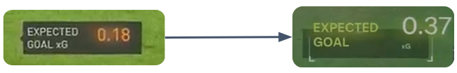

The problem
New feature, uncharted pattern, three panels on-screen at once.
Intelligent AR was a new gameplay-adjacent HUD family for FC 24, overlays that surface match-relevant statistics during natural lulls in play, without stealing focus. Three panels had to read as one visual language and be maintainable by a small team on a hard schedule, but each carried different data, different affordances, and different pacing.
Contextual but not distracting was easy to describe in review. Hard to specify up front.
Constraints
Team scale
10+ people across engineering, design, production, and QV. Coordination cost was real.
Design volatility
Visual direction was going to shift late; the system had to absorb changes without a rebuild.
Cross-year handoff
Whatever shipped in FC 24 would be inherited by a different rotation of hands on FC 25.
Reusable ≠ generic
Shared components had to serve three distinct panel intents without homogenizing them.
The key idea
Do the breakdown once, at the family level. Every panel becomes a composition, not a copy.
I decomposed the AR family into five primitives before any panel was built, ARPanel, ARPanel_Header, ARPanel_Background, ARPanel_Corners, TeamCrest. Each has a defined input schema and its own enter/exit animation. Possession, Last 5 Shots, and Stamina were then a matter of assembling the same pieces differently.
Step 1 Panel identified

Step 2 Composition, one level down

Step 3 Primitives all the way down

Production highlights
Text glow, shader → sprite
The original custom shader had poor performance. Swapped for a fading glow sprite that read equally well at gameplay distance. Frame budget freed for panels the player actually notices.
SVG look without shipping SVG at runtime
Chevrons authored as SVG at design time; field lines animated with UV tricks (uv.x repeat, uv.y clamp) so a single texture produced the flowing-line effect without new shader work.
Layouts that reflow mid-animation
Every panel resizes gracefully when data changes size. Ring color uses a 3-way lerp, base → warning → critical, so stamina reads expressive rather than binary.
Predicted trajectory over motion vectors
Raw motion vectors were noisy. Drawing from the ball's predicted trajectory smoothed the visualization naturally over the frames a panel is on screen.

What I'd carry forward
- Dynamic widgets cost more up front, but the savings start on the second use. The rushed one-off gets more expensive with every reuse.
- In-game feedback beats spec review for anything that lives in real gameplay, panels read differently in-engine than in isolation.
- Cross-team communication matters more than any single design decision when 10+ people are shipping the same system.
- Tools should be designed for their whole lifecycle: install, use, and maintain or extend.